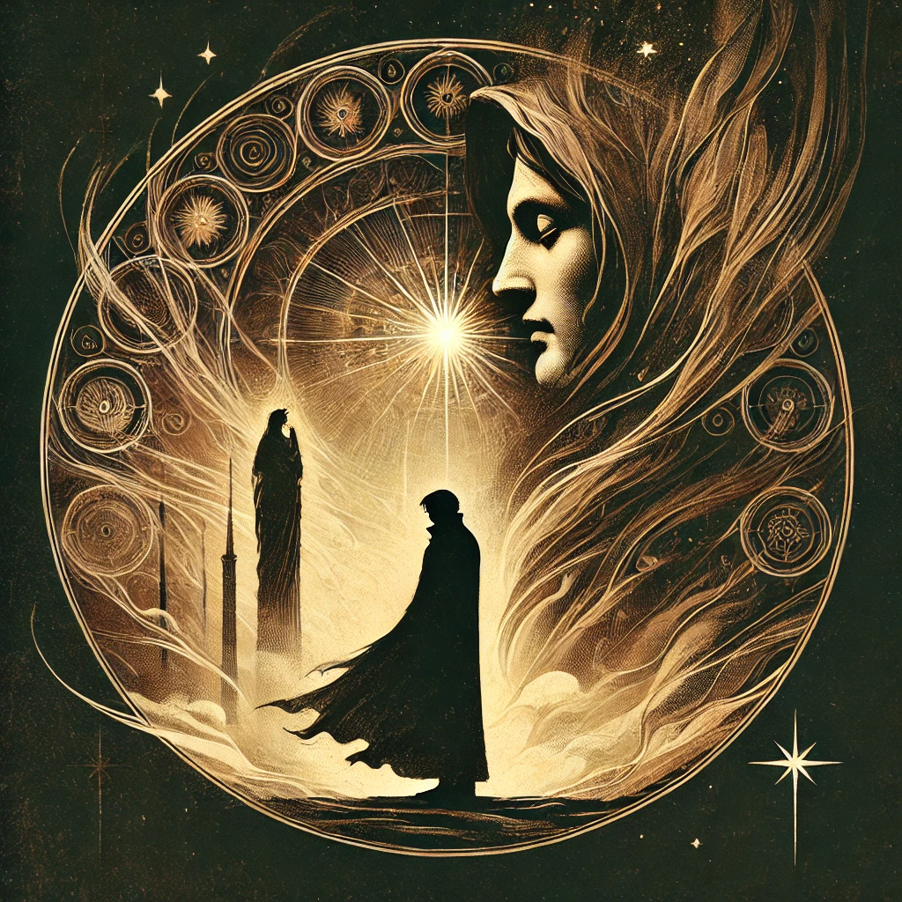

Beneath the Veil of Dante's Sorrow
Before the Banquet
The death of Beatrice inflicted a profound sorrow upon Dante, a grief so deep that no earthly solace could assuage it. In his despair, he desperately sought relief, something to alleviate the ache in his heart and restore tranquility to his troubled soul.
While time gradually softened the intensity of his anguish, it offered no cure. Dante's soul yearned for a deeper remedy, something to resolve the tumult of emotions that had disrupted his inner peace. Friends offered their support, but their efforts could not penetrate the depths of his despair.
In his darkest moments, Dante turned to the wisdom of those who had endured their own suffering and found light amidst darkness. Among them was Boethius, whose philosophical reflections on loss and solace provided a path that transcended the limitations of earthly grief. Initially, the meaning of Boethius's words eluded Dante. However, through contemplation and introspection, their truths began to resonate within him, illuminating his sorrow like the dawn breaking after a long, sleepless night.
Canto I: The Call to the Eternal
"You who guide the eternal harmony of the heavens"
I beseech you, celestial guides who preside over the third heaven, to lend me your ears. My heart is brimming with emotions so unfamiliar that I can scarcely discern their origin. I sense they emanate from a divine fire, descending from the Heavens and ascending back to its source under your watchful care.
Canto II: The Radiance of Love
"The sweet rhymes of Love that I compose foolishly."
Love, aspiring to govern the most elevated aspects of my soul, endeavors to illuminate the profound worth of the beauty it employs to captivate me. It unveils her image with such resplendence that my inner sight can scarcely endure it. Love's revelations about her often surpass my comprehension, yet they are presented with such vividness, gentleness, and persuasiveness that my soul is convinced it understands.
I yearn to articulate the sentiments that Love awakens within me, but I swiftly acknowledge that the subject transcends my capabilities. "Her attributes defy description," I lament. "Would it not be preferable to remain silent rather than risk diminishing her allure by conveying only a fraction of what I perceive?"
Nevertheless, Love compels me to speak. Respect counsels silence, but Love prevails, and I acquiesce. Should my verses prove inadequate—lacking the grace or potency to correspond to the beauty they aspire to depict—let no one question her perfection. Let any shortcomings in my words merely reflect the limitations of my comprehension. Her beauty, in truth, is ineffable.
"Her light is the wellspring of reason, which elevates humanity beyond mere physical existence."
Canto III: The Truth of Nobility
"Love, who speaks within my mind"
The tender love poems that I once cherished are no longer appropriate, not because they have been forgotten, but because the distant and unyielding nature of my lady has rendered them unsuitable.
This is a moment for clarity, not delicate verses. It is imperative to define the authentic essence of nobility and to challenge the erroneous notions that equate it with wealth or lineage.
"Nobility is not found in wealth or birth; it is the hallmark of divine grace."
Epilogue: Beyond the Veil
Dante's journey through the realms of sorrow, love, and nobility ultimately leads him to a profound realization: that all human experience, no matter how painful, serves as a reflection of the divine. The beauty and wisdom he discovers along his path reveal that even in the darkest moments, there is a light that guides us toward higher truths.
In this reflection, Dante finds solace. His grief becomes a stepping stone to enlightenment, his love transforms into reverence, and his search for nobility leads him to the divine essence within all things. Through his words, he invites us to embark on our own journey of discovery—to seek, to suffer, and to ascend beyond the veils that obscure our vision of the eternal.
"Through the darkness, I found the stars; through the sorrow, I found the light."